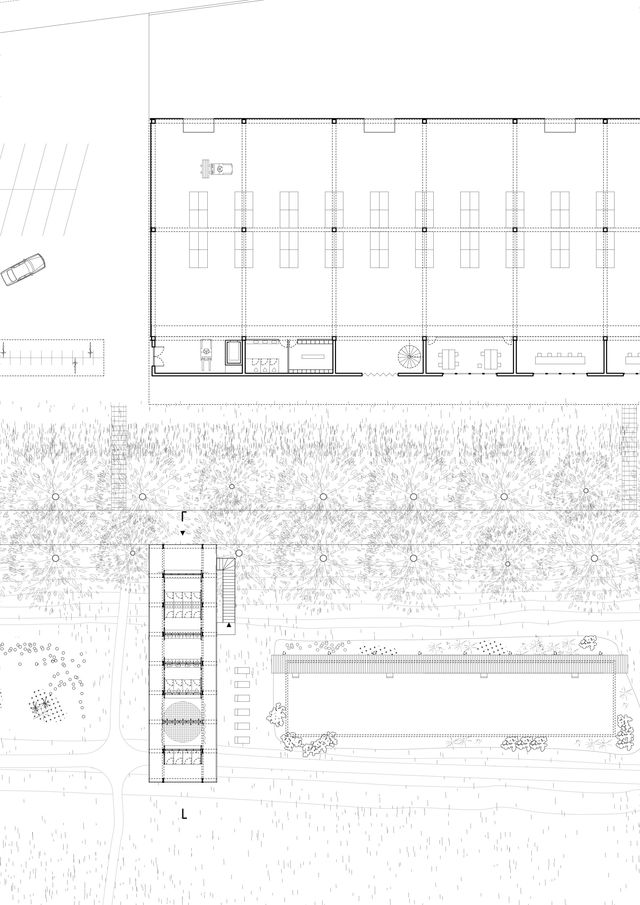
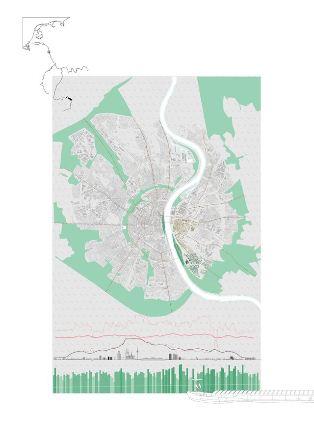
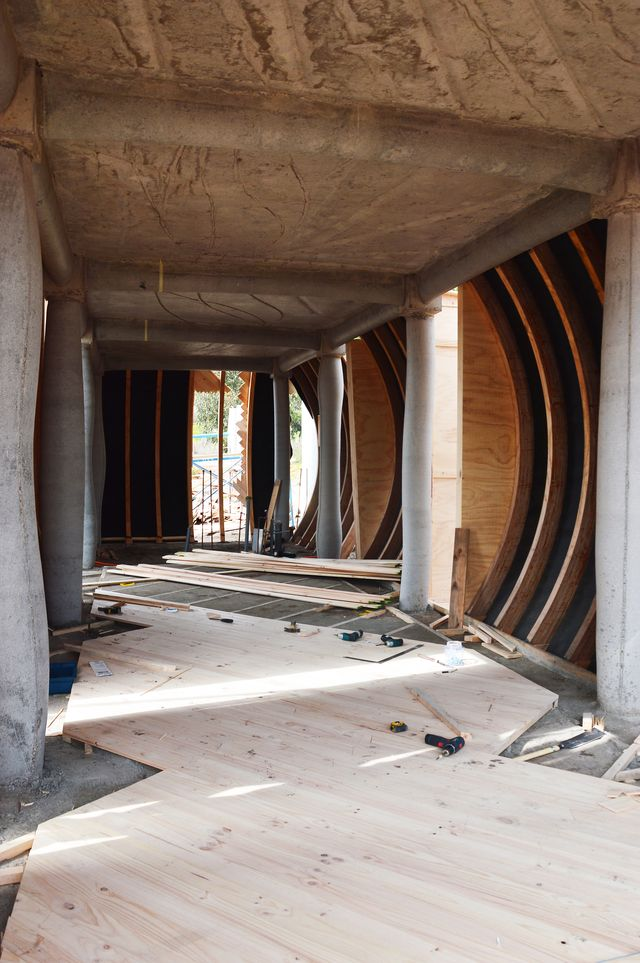
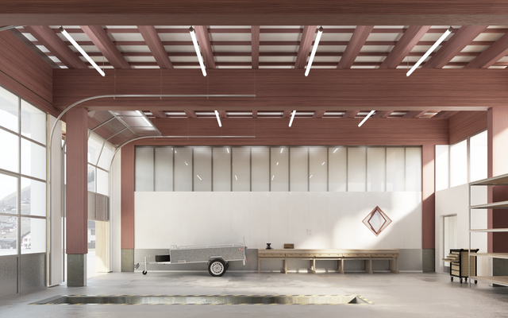
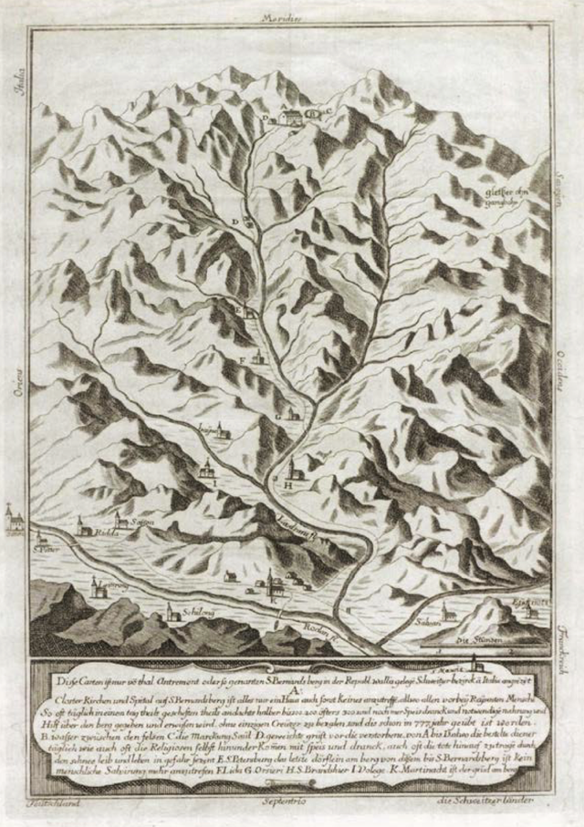
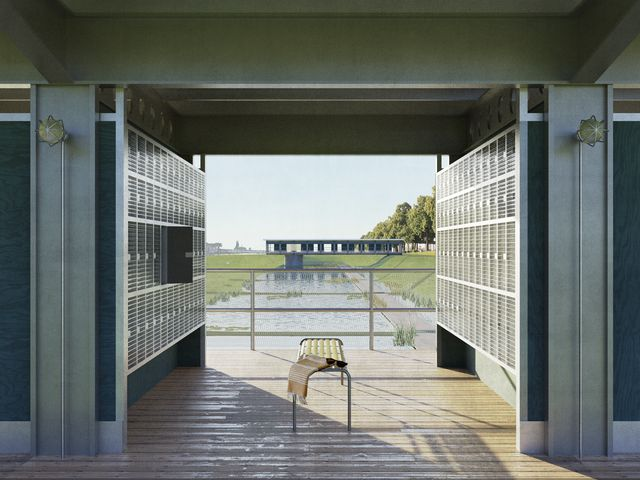
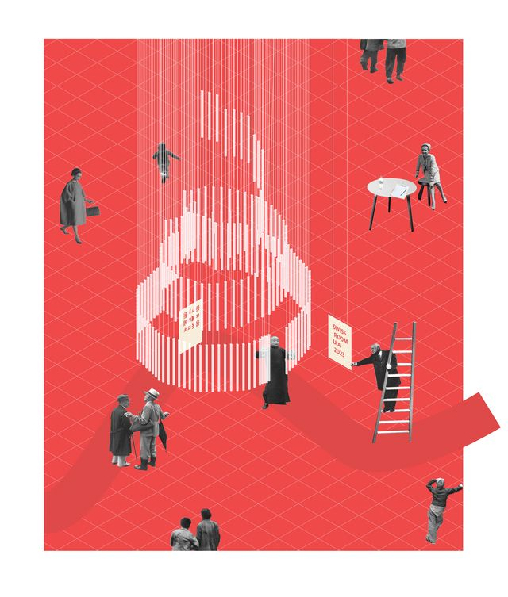
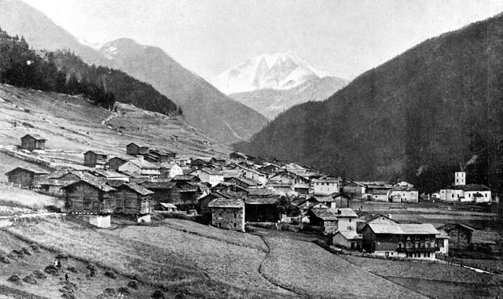
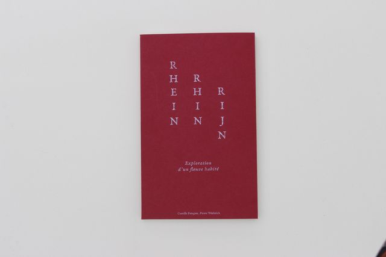

Freibad, Rheinkilometer 686-687, diplôme epflLiddes, concours pour un bâtiment outil avec Atelier 2128Portico de los Huespedes, Ciudad Abierta ValparaisoUn seuil climatique face à Cologne, Rheinkilometer 686-687, diplôme epflFontaine de la Palud, concours BUNSUBiergarten, Rheinkilometer 686-687, diplôme epflLiddes, concours pour un bâtiment outil avec Atelier 2128Rheinkilometer 686-687, diplôme epflBUNSUFreibad, Rheinkilometer 686-687, diplôme epflPortico de los Huespedes, Ciudad Abierta ValparaisoWasserturm, Rheinkilometer 686-687
Dorfbrunnen, ErnenLiddes, concours pour un bâtiment outil avec Atelier 2128SANDWEGPortico de los Huespedes, Ciudad Abierta ValparaisoBiergarten, Rheinkilometer 686-687, diplôme epflExploration d'un fleuve habité, diplôme epflLiddes, concours pour un bâtiment outil avec Atelier 2128Freibad, Rheinkilometer 686-687, diplôme epflPortico de los Huespedes, Ciudad Abierta Valparaiso
Portico de los Huespedes, Ciudad Abierta ValparaisoBUNSUUn seuil climatique face à Cologne, Rheinkilometer 686-687, diplôme epflPortico de los Huespedes, Ciudad Abierta ValparaisoWasserpump, Rheinkilometer 686-687, diplôme epflLiddes, concours pour un bâtiment outil avec Atelier 2128Wasserpump, Rheinkilometer 686-687, diplôme epflExploration d'un fleuve habité, diplôme epflUn seuil climatique face à Cologne, Rheinkilometer 686-687, diplôme epflghga